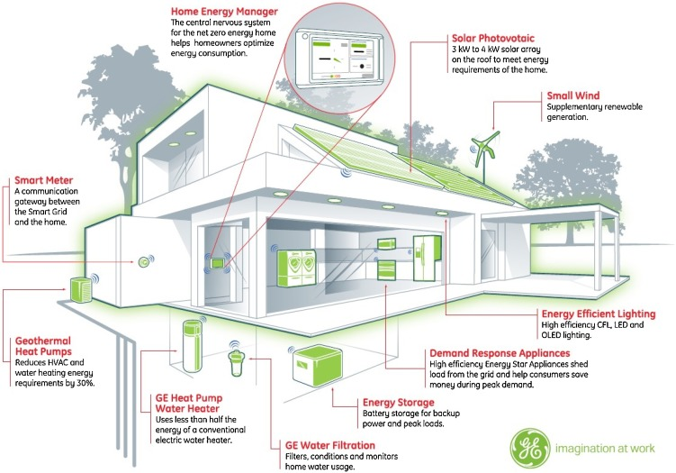

Optimizing your home

Why Is it good for the environment?
Optimizing your home to be better for the environment can involve many small changes. One way is to remove air leaks and drafts by installing caulk, weather stripping, or insulation. This helps reduce your carbon emissions because it lessens the amount of heat your house needs, created by burning fossil fuels. Another simple optimization you can make is to pick only energy-efficient appliances. Appliances such as fridges and dishwashers with an Energy Star label have superior energy efficiency compared to standard appliances. An additional, simple way to make your house more optimized to reduce your carbon footprint is by buying a programmable thermostat. By simply turning down the thermostat when you are not home, you can drastically use less energy needed for heat, reducing your carbon footprint.
Why is it good for the consumer?
Optimizing your home is good for the consumer because you can save on your energy bill and receive government incentives. Using some of these tips, you can save a lot of money on your energy bills, putting money back into your pocket. Along with this, for things such as removing air leaks and drafts, you can earn government incentives, such as in California, where you're paid to make energy-efficient optimizations for your home.